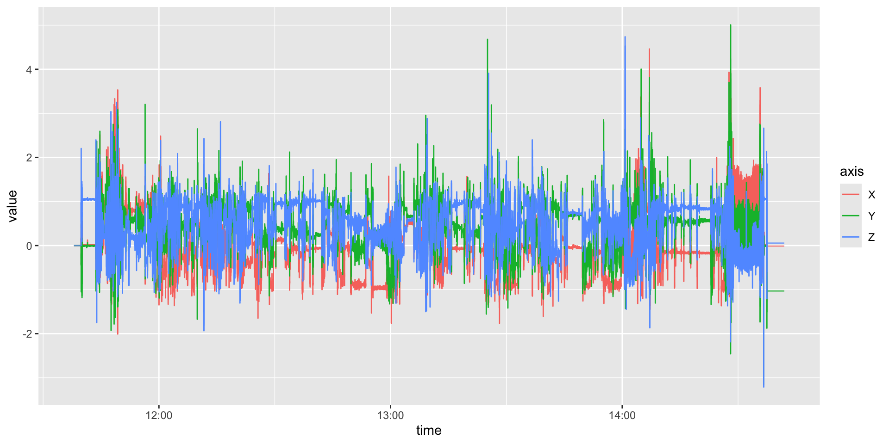
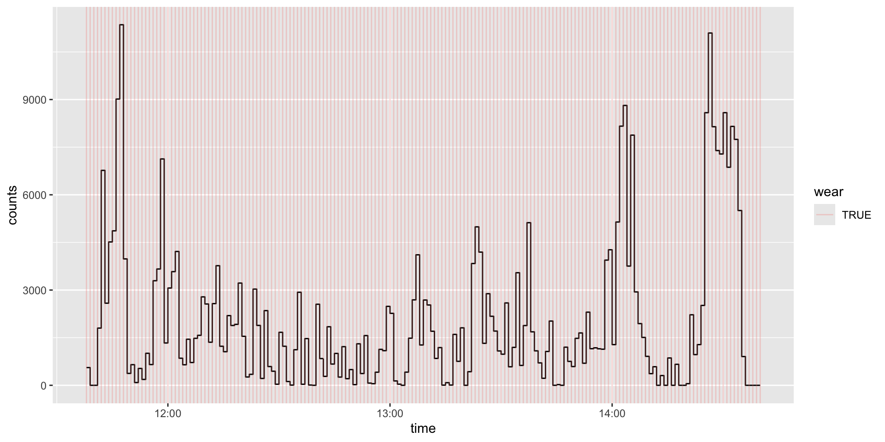

Module 2: Reading and Processing Data
Materials
Materials are at: https://github.com/jhuwit/wearabler
Can use git clone or download via: https://github.com/jhuwit/wearabler/archive/refs/heads/main.zip
Loading targets and environment
Using renv allows us to specify the packages used to build this pipeline:
The targets pipeline located in the GitHub repo will do the processing (and allows us to cache the pipeline).
Data: Personal Recording (from John)
TAS1H30182791 (2026-04-29).gt3x- wore GT9X device114890_0000000000.cwa- wore AX3 deviceAI15_MOS2D09170398_2017-10-30.gt3x- 7 days of data from (Chadwell et al. 2019)
Pipeline Overview
Pipeline Overview
Read in Data (also acti_read_cwa):
Create minute level summaries, including wear inclusion criteria
Pipeline Overview
Keep days with minimum wear time, calculate day-level summaries
Pipeline Overview
Keep participants with minimum number of days observed, create “average” day activity:
Pipeline Overview
Statistics!
Reading in the Data
# A tibble: 3 × 4
time X Y Z
<dttm> <dbl> <dbl> <dbl>
1 2026-04-29 11:38:00.000 0 0 0
2 2026-04-29 11:38:00.019 0 0 0
3 2026-04-29 11:38:00.039 0 0 0# A tibble: 3 × 7
time x y z temp battery light
<dttm> <dbl> <dbl> <dbl> <dbl> <dbl> <dbl>
1 2026-04-29 11:41:18.521 -0.188 0.0938 -0.984 27.3 0 188
2 2026-04-29 11:41:18.541 -0.127 0.0482 -1.08 27.3 0 188
3 2026-04-29 11:41:18.561 -0.155 0.0174 -1.06 27.3 0 188Core Representation
Raw accelerometry is, at its core, a time series with four essential columns:
| Column | Meaning |
|---|---|
time |
A datetime timestamp identifying when the sample was recorded |
X |
Acceleration along the device x axis |
y |
Acceleration along the device y axis |
z |
Acceleration along the device z axis |
Data Attributes
- Sample rate - sampling frequency in Hz:
get_sample_rate - Dynamic accelerometry range in
g:get_dynamic_range
[1] 50[1] 50[1] 50[1] -8 8[1] -8 8 [1] "row.names" "subject_name" "time_zone" "missingness"
[5] "old_version" "firmware" "last_sample_time" "serial_prefix"
[9] "sample_rate" "acceleration_min" "acceleration_max" "header"
[13] "start_time" "stop_time" "total_records" "bad_samples"
[17] "features" "transformations" "names" "class" Data Header from GT9X Device
$`Serial Number`
[1] "TAS1H30182791"
$`Device Type`
[1] "Link"
$Firmware
[1] "1.7.2"
$`Battery Voltage`
[1] "4.13"
$`Sample Rate`
[1] 50
$`Start Date`
[1] "2026-04-29 11:38:00 GMT"
$`Stop Date`
[1] "0001-01-01 GMT"
$`Last Sample Time`
[1] "2026-04-29 14:41:59 GMT"
$TimeZone
[1] "-04:00:00"
$`Download Date`
[1] "2026-04-29 14:41:59 GMT"
$`Board Revision`
[1] "8"
$`Unexpected Resets`
[1] "0"
$`Acceleration Scale`
[1] 256
$`Acceleration Min`
[1] "-8.0"
$`Acceleration Max`
[1] "8.0"
$Sex
[1] "Male"
$Limb
[1] "Wrist"
$Side
[1] "Left"
$Dominance
[1] "Non-Dominant"
$`Subject Name`
[1] "John"
$`Serial Prefix`
[1] "TAS"
$sample_rate
[1] 50
attr(,"class")
[1] "gt3x_info" "list" Data Header from AX3 Device
$uniqueSerialCode
[1] 114890
$frequency
[1] 50
$start
[1] "2026-04-29 11:41:18.521 UTC"
$device
[1] "Axivity"
$firmwareVersion
[1] 48
$blocks
[1] 4423
$accrange
[1] 8
$hardwareType
[1] "AX3"
$blockLength
[1] 120
$acceleration_min
[1] "-8"
$acceleration_max
[1] "8"
$sample_rate
[1] 50Timestamps Need Their Own QC
The timestamp is not merely a row number.
Its timezone, precision, regularity, and gaps determine day boundaries, sleep windows, wear-time intervals, and the validity of all downstream summaries.
Sub-second algorithms depend on fractional seconds. Display enough precision to see them (for example,
options(digits.secs = 3)) and check observed intervals rather than assuming that every nominal 80 Hz file is exactly 80 Hz at every timestamp.Rounding milliseconds during a CSV export can corrupt joins, inferred sampling rates, resampling, and step algorithms.
Timestamps Need Their Own QC
Use an explicit timezone.
UTC avoids daylight-saving discontinuities during processing
Local time is often needed for sleep windows, diary linkage, and calendar-day summaries.
Record the original timezone, the analysis timezone, and every conversion between them.
Before proceeding, verify the timezone, sampling frequency, acceleration units, start and end times, duplicate timestamps, and gaps. Preserve the original file and keep import metadata with the derived table.
Plot the data
acti_tidy_axeswill reshape the time/XYZ data to a long format for plotting
# A tibble: 3 × 3
time axis value
<dttm> <chr> <dbl>
1 2026-04-29 11:38:00.000 X 0
2 2026-04-29 11:38:00.019 X 0
3 2026-04-29 11:38:00.039 X 0
More data shouldn’t mean less plotting - Karl Broman
But the if the data is > 7 days with 80Hz,
7 days * 24 hours/day * 60 minutes/hour * 60 seconds/minute * 80 samples/second
[1] 48384000A lot of Points!
QC: Check for odd things
- Zeroes
- Flat data
- Really high values
GT3X: idle sleep mode
Idle sleep mode - battery saving option when enabling and setting up ActiGraph devices.
Stops recording after no movement after while
It’s a hassle, don’t use it unless you have to.
It causes “gaps” in the GT3X file that are truly missing, but this is an issue with many processing methods (gaps), so you can “impute” zeroes into the data set, which aren’t correct either.
How long is not wearing/zero
Question:
- How long is low/no activity not wearing?
Non-wear Estimation
In a nutshell: 1) Define threshold for no activity, 2) define time threshold for how long it lasts (e.g. 90 minutes), 3) do you allow for any “spikes”?
- (Hees et al. 2011): Non-wear is a 30-min non-overlapping raw-acceleration window with SD <3 mg or range <50 mg in at least 2 of 3 axes.
- (Van Hees et al. 2013): Same thresholds, but 60-min rolling window using 15-min steps, 00:00–01:00, then 00:15–01:15, then 00:30–01:30
- (Choi et al. 2011): Classifies ≥90 minutes of zero activity counts, allowing brief interruptions, as non-wear. (Popular)
- (Troiano et al. 2008): Defines non-wear as ≥60 consecutive zero-count minutes, permitting short low-count interruptions.
GGIR: Why not being used here
- Very popular
- Has changed and added a number of algorithms over the yeas
- Good: state of the art, bad: some reproducibility concerns over time
- Want something more modular
- GGIR creates a “buffet” of activity measures
- A lot of python modules have made considerable contributions
Activity Count
Choi/Troiano use Activity Counts
(Neishabouri et al. 2022) - made open source the activity count calculation
agcountsR package
Activity Count


Estimate Non-wear from counts
- Calculate wear using
acti_calculate_wear, uses Choi by default
# A tibble: 3 × 2
time wear
<dttm> <lgl>
1 2026-04-29 11:38:00.000 TRUE
2 2026-04-29 11:39:00.000 TRUE
3 2026-04-29 11:40:00.000 TRUE # A tibble: 3 × 2
time wear
<dttm> <lgl>
1 2026-04-29 11:41:00.000 TRUE
2 2026-04-29 11:42:00.000 TRUE
3 2026-04-29 11:43:00.000 TRUE Just use acti_process
Plotting

Reading Full Data
We can read in the data from (Chadwell et al. 2019) and run the minute level data with wear/non-wear:
[1] "Creating Downsampled Data"
[1] "Filtering Data"
[1] "Trimming Data"
[1] "Getting data back to 10Hz for accumulation"
[1] "Summing epochs"
Day Level Inclusion
Usually determined by number of minutes wear time
Choices: - 1296 - 90% of 1440 minutes (Schrack et al. 2014) - 1368 - 95% of 1440 minutes (Leroux et al. 2024) - 10 hours of wear (may be contiguous or not) (Troiano et al. 2008) - 10 hours daytime wear (6AM-12AM, not good for sleep) (Dillon et al. 2018)
Day Level Inclusion
create_day_inclusion- creates a table for inclusionadd_day_inclusion- creates and joins with time-series
# A tibble: 8 × 6
date n_minutes_wear n_minutes_observed prop_minutes_wear
<date> <int> <int> <dbl>
1 2017-10-30 443 1440 0.308
2 2017-10-31 909 1440 0.631
3 2017-11-01 701 1440 0.487
4 2017-11-02 939 1440 0.652
5 2017-11-03 821 1440 0.570
6 2017-11-04 602 1440 0.418
7 2017-11-05 231 1440 0.160
8 2017-11-06 364 1440 0.253
# ℹ 2 more variables: prop_minutes_wear_from_observed <dbl>, is_included <lgl># A tibble: 10,080 × 13
time axis1 axis2 axis3 counts counts_log10 wear
<dttm> <dbl> <dbl> <dbl> <dbl> <dbl> <lgl>
1 2017-10-30 15:00:00.000 180 201 25 271 2.43 TRUE
2 2017-10-30 15:01:00.000 371 1262 806 1543 3.19 TRUE
3 2017-10-30 15:02:00.000 452 553 465 852 2.93 TRUE
4 2017-10-30 15:03:00.000 1315 1486 1880 2733 3.44 TRUE
5 2017-10-30 15:04:00.000 756 317 510 965 2.98 TRUE
6 2017-10-30 15:05:00.000 80 60 136 169 2.23 TRUE
7 2017-10-30 15:06:00.000 682 420 599 1000 3.00 TRUE
8 2017-10-30 15:07:00.000 1160 1192 2164 2729 3.44 TRUE
9 2017-10-30 15:08:00.000 0 0 0 0 0 TRUE
10 2017-10-30 15:09:00.000 606 362 345 786 2.90 TRUE
# ℹ 10,070 more rows
# ℹ 6 more variables: date <date>, n_minutes_wear <int>,
# n_minutes_observed <int>, prop_minutes_wear <dbl>,
# prop_minutes_wear_from_observed <dbl>, is_included <lgl>Summary
- Raw data to minute level counts
- Non-wear estimated from low activity for long periods of time
acti_processcan do that and merge the data- Plotting the data typically using
geom_stepand color bygeom_segment - Day level inclusion usually based on wear
Wearable-R: https://github.com/jhuwit/wearabler